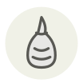

Œufs de cabillaud fumés
Smoked cod roe
| Nom latin | Gadus morhua (smoked roe) |
|---|---|
| Famille | Œufs de poisson & caviar |
| Origine | Mer du Nord et Baltique |
| Saison | Toute l’année |
| Goût | Fumé · Salé · Umami · Salin |
| Prix courant | 20–40 €/kg |
Ce que c’est
Le mezzé grec qui l’a rendu célèbre tient son nom du tarama, mot turc ottoman pour la rogue de poisson, lui-même emprunté au persan, et c’était une nourriture de carême avant d’être une entrée. La carpe et le mulet sont venus d’abord ; le cabillaud est le substitut du Nord, celui qui a voyagé.
En cuisine
Pelez la poche avant de mixer, sinon vous garderez du grain sous la dent : fendez la membrane et raclez les œufs à la cuillère. Ensuite travaillez comme une mayonnaise — mie trempée ou pomme de terre d’abord, citron, puis l’huile en filet, et arrêtez dès que la masse pâlit et raidit.
S’accorde avec
Huile d’olive Citron Pomme de terre Ail Oignon rouge Aneth Concombre
Même espèce
Cabillaud Foie de morue Hwangtae (lieu d’Alaska séché au gel) Langues de morue Mentaiko (œufs de colin marinés) Morue salée
Une erreur ici, ou un oubli ? Dites-le nous